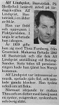

Alf Oskar Lindqvist
Blev 84 år.
| Far: | Oskar Lindqvist (1871 - ) |
|---|
| Mor: | Brita Maria Vikström (1877 - ) |
|---|
| Född: | 1907-07-17 Fisktjärnliden 1, Burträsk sn. [1] | |
|---|
| Död: | 1991-09-14 Bastuträsk fs, Norsjö kn. [2] | Dödsorsak: Lungcancer. |
|---|
| Vigsel: | 1939-12-17 Fisktjärnliden, Kalvträsk fs, Burträsk sn. [2] |
|---|
| Utflyttad till: | 1942 Bastuträsk 1:94, Bastuträsk mcp, Norsjö sn. [3] |
|---|
| Levde: | 1975 Prästv 12, Bastuträsk, Bastuträsk kbfd, Norsjö kn. [4] |
|---|
| Barn: |
|---|
| Siv Inga_Britt Lindqvist (1940 - ) |
Personhistoria
| Årtal | Ålder | Händelse |
|---|
| 1907 |
|
Födelse 1907-07-17 Fisktjärnliden 1, Burträsk sn [1] |
| 1914 |
6 år |
Makan Selma Teresia (Thea) Forsberg föds 1914-03-05 Villvattnet 13, Granträsk 5, Burträsk sn [5] |
| 1915 |
7 år |
Brodern Ingvar Lindqvist föds 1915-04-10 Fisktjärnliden 1, Burträsk fs, Burträsk sn [6] |
| 1939 |
32 år |
Vigsel Selma Teresia (Thea) Forsberg 1939-12-17 Fisktjärnliden, Kalvträsk fs, Burträsk sn [2] |
| 1940 |
32 år |
Dottern Siv Inga_Britt Lindqvist föds 1940-06-11 Fisktjärnliden, Kalvträsk, Burträsk fs, Burträsk sn [3] |
| 1942 |
|
Utflyttad till Selma Teresia (Thea) Forsberg 1942 Bastuträsk 1:94, Bastuträsk mcp, Norsjö sn [3] |
| 1975 |
|
Levde Selma Teresia (Thea) Forsberg 1975 Prästv 12, Bastuträsk, Bastuträsk kbfd, Norsjö kn [4] |
| 1991 |
84 år |
Död 1991-09-14 Bastuträsk fs, Norsjö kn [2] |
Källor
| [1] | Burträsk AIIA:2D (1911-1925) fol. 1116 k.2/8, Mtl Västerbottens län 1971 |
| |
| | |
| [2] | SPAR 92, RTB 91 |
| |
| | |
| [3] | Mtl Sveriges befolkning 1950 |
| |
| | |
| [4] | Mtl Sveriges befolkning 1975 |
| |
| | |
| [5] | Burträsk AIIA:2F (1911-1925) fol. 1991 k.6/8 |
| |
| | |
| [6] | Mtl Västerbottens län 1971 |
| |
|
|  |
| 1991-09-17. Norra Västerbotten |
|
{kind=link}